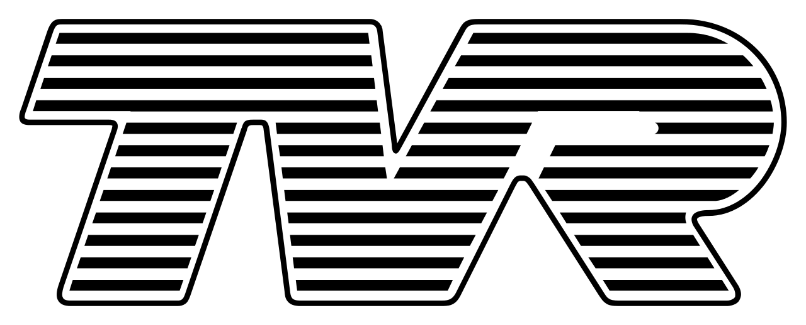

TVR
Pasion, Rendimiento Crudo y Estilo Distintivo

TVR es una marca británica de coches deportivos de nicho, conocida por su enfoque en el rendimiento puro, la construcción ligera, los potentes motores (a menudo V8) y un estilo de carrocería de fibra de vidrio audaz y distintivo. TVR ofrece una experiencia de conducción visceral y sin filtros, dirigida a entusiastas que buscan algo fuera de lo común.
Historia y Origen
La compañía fue fundada en 1946 por Trevor Wilkinson en Blackpool, Lancashire. Inicialmente, reparaba coches y construía deportivos ligeros basados en chasis existentes. El nombre TVR proviene de las iniciales de Trevor Wilkinson. El primer coche que llevó el nombre TVR fue el TVR No. 1 de 1949, aunque los primeros coches de producción reconocibles llegaron en los años 50, utilizando chasis tubulares y carrocerías de fibra de vidrio.
TVR ha pasado por numerosos propietarios a lo largo de su historia, lo que ha llevado a altibajos en la producción y el desarrollo de modelos. Peter Wheeler, un ingeniero químico e industrial, compró TVR en 1981. Bajo su propiedad (hasta 2004), la marca experimentó un renacimiento, centrándose en potentes motores V8 (inicialmente derivados de Rover, luego motores propios como el AJP8 y Speed Six) y diseños de carrocería audaces (Griffith, Chimaera, Cerbera, Tuscan, Sagaris). Esta es quizás la era más conocida y exitosa de la marca.
Después de la era Wheeler, TVR fue propiedad de un empresario ruso y la producción cesó en gran medida a finales de la década de 2000. Ha habido intentos intermitentes de revivir la marca bajo nueva propiedad, anunciando un nuevo modelo (el Griffith) desarrollado con Gordon Murray Design.
Logros y reconocimientos 🏆
TVR se ganó la reputación de producir coches deportivos con una relación peso-potencia excepcional, ofreciendo un rendimiento de supercoche a un precio más accesible.
Sus carrocerías de fibra de vidrio son inmediatamente reconocibles, a menudo con líneas fluidas, detalles excéntricos (como los escapes laterales del Sagaris) y una estética agresiva.
El desarrollo de motores potentes y con carácter como el V8 AJP y el seis en línea Speed Six fue un logro significativo para un fabricante de nicho. Aunque no es su enfoque principal, los TVR han tenido éxito en carreras de GT (como el Tuscan Challenge y versiones de carreras del Cerbera).
Innovaciones Tecnologicas
Construcción de Carrocería de Fibra de Vidrio: TVR fue uno de los primeros fabricantes en utilizar extensivamente la fibra de vidrio para carrocerías, montadas sobre chasis tubulares de acero. Esto contribuyó a su bajo peso.
Chasis Tubular: El uso de un chasis de acero tubular para proporcionar rigidez y protección en caso de impacto.
Motores Propios de Alto Rendimiento: El desarrollo de los motores AJP V8 (4.2L y 4.5L) y el Speed Six (3.6L, 4.0L) por Al Melling bajo la dirección de Peter Wheeler fue una notable hazaña de ingeniería para un pequeño fabricante.
Enfoque en la Mecánica Pura: Históricamente, TVR evitó la mayoría de las ayudas electrónicas para el conductor (ABS, control de tracción, airbags), priorizando la conexión directa del conductor con la máquina. Esto es una "innovación" por su ausencia, pero define la experiencia.
Impacto Cultural
Marca de Entusiastas de Nicho: Atrae a conductores que buscan una experiencia de conducción más cruda, desafiante y visceral que la que ofrecen los deportivos convencionales.
Excentricidad Británica: A menudo se les considera coches un poco excéntricos o "locos" debido a sus potentes motores, su manejo desafiante y su diseño audaz.
Rendimiento sin Concesiones: La imagen de la marca se basa en ofrecer alto rendimiento y emoción por encima de la practicidad o el lujo.
Icono del Automovilismo Británico Independiente: Representan la tradición de los pequeños fabricantes de deportivos británicos que priorizan el rendimiento y el carácter.
Listado de Modelos 🚗
- TVR Griffith
- Grantura (1958-1967)
- Griffith 200/400 (1963-1967)
- Chimaera (1992-2003)
- Griffith (1991-2002)
- Cerbera (1996-2005)
- Tuscan (1999-2006)
- Sagaris (2004-2006)
Modelos posibles a Producirse

Modelos Iconicos

 _ Registry _ The Autoshrine Network.jpeg)


Datos curiosos:
- Origen del Nombre TVR: Como se mencionó, proviene de las iniciales del fundador, Trevor Wilkinson.
- Sin Ayudas Electrónicas (Generalmente): La ausencia deliberada de ABS, control de tracción y airbags en muchos de sus modelos fue una filosofía de diseño que generó controversia pero atrajo a puristas de la conducción.
- El Cerbera Speed 12: Un prototipo extremo de un supercoche de carreras/carretera (con un motor V12 basado en dos motores Speed Six) que Peter Wheeler consideró demasiado potente y peligroso para vender a clientes, a pesar de su increíble rendimiento. Se rumoreaba que tenía más de 800 CV.
- Los Escapes Laterales del Sagaris: El diseño audaz del TVR Sagaris incluía tubos de escape que salían por el lateral del coche, justo delante de las ruedas traseras. También tenía ventilaciones en la carrocería cuyo propósito exacto a menudo era objeto de debate.
- Motores AJP: El nombre de los motores V8 y Speed Six desarrollados por TVR en los 90 (AJP8 y AJP Speed Six) proviene de los ingenieros Al Melling, John Ravenscroft y Peter Wheeler.
- La Reintroducción del Griffith:El plan actual para revivir TVR se centra en el nuevo Griffith, que utiliza un chasis ligero y una "iStream" de Gordon Murray Design y un motor Ford Coyote V8 preparado por Cosworth. Sin embargo, el proyecto ha enfrentado retrasos significativos.